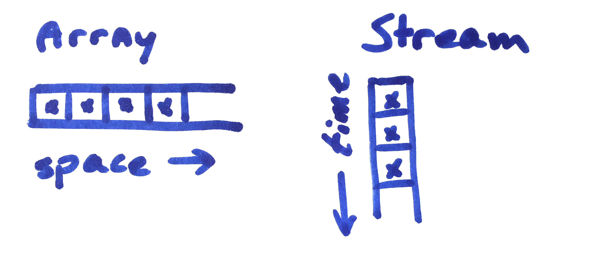

In recent years many developers have been introduced to some sort of Reactive Programming, be it via Rx, Elm, Akka or Meteor. These developers will know that the learning curve is steep and it takes time to fully understand all aspects of reactive programming. Developers who have not been using reactive programming might have withheld it because they had trouble understanding the abstract concepts. While it requires some time to understand, the effort pays of: programs written using reactive programming are generally better structured and shorter. The libraries and frameworks allow to focus more on how data is transformed and less on the peculiarities of moving the data around.
This blog first introduces the basic concepts of reactive programming as well as some of the more advanced topics. We will use different languages and frameworks where appropriate to the subjects discussed. This section also contains some links to more background information.
The second part of the blog discusses some practical examples, comparing features of different frameworks and explaining specific functionality or complications.
Shifting away from traditional batch based programs and towards interactive applications, possibly handling large amounts of live data, we as developers needed a new toolchain. Traditionally we would gather all data, put it into a computer and it would run over night, hopefully being done in the morning. Nowadays we get new data constantly and want it processed immediately, updating the output instantly. We also make more interactive applications, handling more sorts of inputs. Next to just clicks, our phones now have sensors to register all kinds of inputs. The speed at which the program needs to work is determined by the environment, as with reactive programs, in contrast to traditional transformational programs.
With reactive programming you can write more comprehensible code, because you can model the data-flow instead of passing the data around manually. You describe what happens when new parts of data arrive, define through which transformations the data should go, and which output gets generated in response to the input. At the basis of reactive programming lie abstractions and primitives that conceptualise these inputs and the operations you can perform, as discussed in the next sections.
Many languages and frameworks offer a way in to reactive programming, but they are all very different. This is possible because the early definition, given by Gérard Berry, is so broad:
Reactive programs continuously interact with their environment, at a speed determined by the environment instead of the program itself.
- Gérard Berry, 1989
In practice this means you should use a reactive programming library when
It is very common to not be in control of the input: in every client-server or service architecture the client is a source of uncontrollable input. Timely responses are also very commonly requested by customers. In retrospective a lot of systems are suitable for reactive programming.
It is less practical or necessary to use reactive programming libraries when you are in control of the input or when you do not need to respond quickly. In these cases it mainly introduces overhead compared to normal batch processing using for-loops and linearly executed code. When used to handle irregular (reactive) input this overhead is typically minimal compared to the time the processor can be idle between inputs.
Other technology and concepts exist that leverage the term reactive, in the section disambiguating 'reactivity' will address these different types of reactivity.
Above section refers to some kind of input. In order to reference this input reactive programming libraries use a special data type. Just like an Array encapsulates data in (memory) space, they use this type to encapsulate data in time. The libraries use different names and the semantics of the types differ too, but a stream of data over time is the general idea.

In the first Functional Reactive Programming (FRP) libraries this type was called a Event for discrete data or a Behaviour for continuous data. Working with the input as a continuous stream of data helps in animation or physical simulations because the discretisation that is inherit to digital circuitry is abstracted away. It is however also difficult to implement and optimise. Especially when different parts of the system require different simulation frequenties creating an implementation that is transparent to the developer was found to be hard and compromises to the original idea were made. Later implementations mainly focus on discrete input.
We will go into the specifics of some implementations later in this article, but for now the following summary of types should suffice:
| Technology | Data Type |
|---|---|
| Fran | Event |
| Elm | Signal |
| Rx | Observable |
| Akka | Source |
| RS | Publisher |
| Java 9 Flow | Flow.Publisher |
In the following sections we will use the term stream when we refer to input in general, without referring to any specific data type. We will use a capital when referring to specific types.
Every input received triggers the reactive program. Next, the program can act on this data, possibly transforming the data and/or produce some output. A multitude of transformations are available in each library. The more generic transformations can be used as building blocks for more advanced ones. We will discuss some of the basic and some of the advanced transformations.
Just like functional languages let you transform arrays the reactive libraries let us transform streams with a function like map. As known from arrays this transformation applies a given function to each element in the stream, producing a stream equal in timing but with transformed elements. To eliminate some elements the filter operator can be used.
A feature from the Haskell-like origins is the support for flatMap, an operation that's takes a function which produces a new stream for each incoming element and combines the many new streams in a single resulting stream. The flatMap operator is part of the requirements for a type to be a Monad, and not all libraries have a data type which is a Monad. For example Elm lacks flatMap as it Signals explicitly are no Monads but Applicative Functors. More on this in section X.
Beside element transformations also time manipulating operators are available. The name of methods like delay and throttle speak for themselves. More of such transformations exists, depending on the library we use.
Each reactive programming language or framework has an evaluation model, responsible for propagating changes. This evaluation model of a reactive system is mostly hidden to the user, but it influences the performance and the capabilities that the system offers. Generally two paradigms exist: push and pull. In this section we explains both their advantages and disadvantages, and use cases.
When propagating changes in a reactive system, either the source or dependants can be in charge of initiating the propagation. Either the sources send (push) values to their dependants or the dependants request (pull) the values from their sources. Don't be confused: the data always originates at the source and flows to destination, but who is responsible is what changes.
Push based reactive systems propagate changes to subscribers as soon as new data arrives. It is data-driven. To achieve this, such a system lets subscribers register with the source or observable to receive updates first. The source then remembers who is subscribed. Later, when a source changes, it pushes an update to all dependants. There is nothing the dependant can do to stop this, except unregistering.
This conforms to the original definition of Reactive Programming: the dependant operates at the speed of the environment providing new data. This ensures the fastest delivery possible: whenever new data is available it reaches the destination.
A disadvantage is that the programmer needs to make sure that processing the change is fast, virtually instant. Luckily frameworks generally implement ways to de-duplicate, buffer or drop superfluous changes. Push based systems work best when changes have a discrete character, for example clicks or tweets, and there is no sample rate that is seriously limiting the main effect. Push based is thus more suitable for updating a database or application UIs than for example the game loop of a 60fps 3d shooter game.
Pull based systems propagate changes whenever the subscriber requires new data. They are demand-driven. The first Functional Reactive Programming languages (Fran) were pull based. It matches well with the concept of a Behaviour, a continuous function: continuous functions need to be sampled to visualise them on a screen or write them to disk. When a new sample is started each value requests the values of it's upstream dependencies. This ensures no wasteful computations are done in-between samples, but also introduces a delay between changes and their effect: on average half the sample rate and in the worst case the full sample rate.
It can be argued that pull based systems are not 'reactive' in the sense of the original definition: the subscriber is in charge of requesting new data, so it is possible that the system does not operate at the speed of the environment. Depending on the use case this can be a good thing, but in most use cases for Reactive Programming push-based systems theoretically offer better performance.
Some languages require more verbose syntax than others. Rx and Reactive Streams both use a comparable syntax: factory methods are available in the form of static methods and to apply operations on the streams several class methods are available. This often leads to the method chaining pattern):
factoryMethod(value)
.map(f)
.scan(g)
.subscribe(v => console.log(v));
Other libraries, especially in dynamic languages, have a more implicit syntax.
You can for example write the following code in Meteor which will always show the current amount of users, even when a new user is added or removed in another session:
Template.helpers.twiceTheUserCount = () => Users.count() * 2
Count: {{ twiceTheUserCount }}
In this example the count is a stream, but the operation is done on a single stream element. The code Users.count() * 2 is a new stream, because a dependency is registered when the first stream is evaluated. Meteor makes use of the dynamic nature of the language to detect whether a function is a normal function or a reactive one, which needs to be re-evaluated. A limitation of this syntax is losing control over the stream as a collection. Streams are not first class, merely just re-evaluated functions. This is ideal for data-binding, but somewhat limiting for more advanced usage. Consider for example that other libraries allow you to accumulate over previous values, or disconnect a stream when we are not interested anymore. To show why this does not work, see the example in the section Difficulties with implicit syntax.
In both evaluation models either explicitly or implicitly a dependency graph is formed. Either the subscribers know where to pull or the producers know where to push new data. Libraries like Akka and Rx let us explicitly define the relations by wiring sources and operations to subscribers.
In the following Rx example three streams are defined. By subscribing to the last stream called joined the system is started. This stream is explicitly defined by using the combineLatest operator, wiring up dependencies.
graph
const numbers = Rx.Observable.interval(1000);
const alphabet = Rx.Observable.interval(500).map(i => i % 26 + 97);
const joined = Rx.Observable.combineLatest(alphabet, numbers, (s, n) => s + n);
join.subscribe(v => console.log(v));
In contrast, some other languages construct the dependency graph automatically by registering dependencies upon execution. An example of this is Tracker, Meteor's reactivity module. In Meteor by wrapping functions in Tracker.autorun...
It seems that everything needs to be reactive nowadays. Everyone thinks of it as something desirable. Even your favourite new library says it is reactive. But does that mean that it is using Reactive Programming? Looking at the current offering in reactive technology we can identify at least ]4 different) use cases of the term reactive.
As part of the buzz, reactive is used as a synonym for responsive, meaning the system - often a web application - responds instantly to user interaction. The definition of responsive is to react promptly, so there is some truth in this use case. But reactive does not necessarily requires promptness. Why do people not use responsive to describe this behaviour? The term responsive is being hijacked by Responsive Web Design, where layouts adapt to screen size.
Furthermore, tools to create such snappy user interfaces, like Meteor's latency compensation, make UIs responsive by providing an instant intelligent prediction of deferred server computation. Because those frameworks (like Meteor) are often also reactive in the sense of the third definition, the confusion is increased. It would be more precise to use "responsive" to describe these UIs.
The second use case is in an software architecture context. In an effort to standardise some patterns for cloud architectures the company Typesafe and others started the Reactive Manifesto. The manifesto identifies 4 aspects that presumably define a good reactive system:
The main goal of the manifesto seems to be creating some consensus and standardising some terms among consultants and recruiters alike. For developers it mainly means to never block threads and to be asynchronous everywhere. Tied to this manifesto is the Reactive Streams initiative, discussed later in this blog. Reactive Streams is proposed to implement the Message Driven aspect and is a form of the fourth use case described here.
Systems having above properties may or may not be reactive according to Berry's original definition however: they may still operate at their own pace, using cron jobs and message queue's to schedule their work. Although not mandatory, the manifesto does stimulate the use of real reactive technologies, like the Reactive Streams proposal and message passing systems like Akka.
A third form of reactivity are automatic data bindings. Among non-technical users the most well known example of this are Excel Spreadsheets. The idea is that one defines some value in terms of other values, and when the dependencies change, the dependent values are updated too. Many modern web frameworks and libraries provide this functionality, in combination with some form of view rendering. For example:
Note that all of the above are in JavaScript (or TypeScript) and this list is far from exhaustive. Equally some frameworks like this exist for other platforms, like native mobile platforms.
The JavaScript frameworks all allow bindings to be setup in the form of directives inside HTML markup and/or using manual wiring using imperative syntax. The reason for this change is often user interaction, external input, like clicking a button or entering a form. When the model changes new HTML is generated and inserted. Some of the above support two-way bindings: when special directives are in place not only will the view update when the model changes, but the model will be automatically updated when the view changes too, by keystrokes in a form field for example. Writing these bindings allows developers to write layout code once and not be bothered with writing callbacks for the change of each individual value.
It is possible to build a data binding system using Reactive Programming. It is more limited than Reactive Programming because data binding frameworks do not recognise events as first class data types. They simply re-render when data changes, but the event itself you can not reference.
Not recognising events has some implications: data binding systems only intent to represent a current value. They do not represent time, or allow to reason about previous values, without making you resort to side-effects. To overcome this limitation we need some stronger tools, like the next use case of the term reactive, that this article is about.
One step ahead of data bindings is Reactive Programming. Besides reasoning over current values we can now model and reason about complete data flows. We can, without side-effects, count the occurrences of an event, or aggregate them, for example.
Each library and/or platform offers distinct features. To summarise some features:
Reactive Programming was first mentioned in research about Real-Time and Reactive Systems in the context of data-flow programming and the development of Esterel, by Gerard Berry and his team. They noted that then existing General Purpose Languages (GPL's) alone were not suitable for those systems, and that development could benefit from better abstractions and primitives available in Special Purpose Languages, like Esterel. He argues for synchronity as it allows focussing on the logic of reactions, instead of dealing with the problems that arise with asynchronity. Synchronity makes deterministic and concurrent programs possible and causes performance to be predictable, which is necessary for real time systems. He concludes that GPL's and SPL's respective advantages are complementary and can be combined in larger systems.
Javascript
Note that while synchronity seems old school, still one of the most used languages to date is mostly synchronous: Javascript is single-threaded and functions are run to completion, so no program code can simultaneously modify shared variables or state. Javascript uses an event loop to support concurrency. Asynchronous operations can be run, but upon completion control is handed to the single event loop, synchronizing code flow again. This way asynchronous operations can be run in the browser and on the operating system, like fetching remote resources, writing files or parellism using Web Workers, but preventing the many difficulties of normal paralellism.
In 1997 Elliot and Hudak use a functional rather than imperative style for their Reactive Animation system Fran [Elliot, 1997]. Being the first FRP framework, Fran is often referred to as classic functional reactive programming (Classic FRP). It provided a basis for future research into (functional) reactive programming by creating the notion of events and behaviours.
In FRP two reactive data types existed: Events and Behaviours. Events represent a sequence of discrete timestamped values:
Behaviours, on the contrary, are continuous and time-varying values. For example analog position, velocity or acceleration, the temperature, or time itself, are behaviours. At any given (valid) time a value exists. They can be represented as a function from time to a value:
There exists an isomorphism between Events and Behaviours, as shown by [Wan et al, 2001], converting from discrete to continuous time. At each point in time there is either some event or there is no event:
Here Option is an abstract data type, being either Some α or None. This isomorphism simplifies the semantics: we can now represent both behaviours and events in a common data type. Wan et al. call this a Signal:
The isomorphism holds two ways, when viewed from a more practical viewpoint. Continuous values, behaviours, when modeled in the computer are really discrete values or samples, so Behaviours are represented as very fast firing Events. There is an actual maximum frequency at which the data is needed, for at least two reasons: first the input is received only at the sample speed of the sensors and second the system can only display the results to the screen at a maximum of the refresh rate of the monitor or a given output rate to other outputs.
-> put first graph here
Depending on how the behaviour is used, this even allows for some optimization: by not firing an event when the sampled value did not change, we can prevent unnecessary recomputations. When further computations count or average the values this can not be done of course, so in most languages this is an explicit operation, often called distinct.
-> put second graph here
Some restrictions on this isomorphism have to be regarded however, as one can express behaviours that are hard or impossible to convert to deterministic events. Sometimes these difficulties are solved by increasing the sampling rate, like with integrals. Languages like Fran allow for behaviours like integrate which apply mathematical integration to a function. These behaviours can be approximated with sampling rates going to zero. Examples of impossibly convertible behaviours are sharp, Zeno's paradox, and unpredictable. These examples share the feature that frequency and sampling rate play an important role which is hard to express semantically, and thus are described as non-terminating or erroring by Wan et al.
The semantics of Events and Behaviours are well defined in Elliots paper Push-Pull Functional Reactive Programming. The original definitions and primitives are replaced by common Haskell classes and methods where possible, giving the semantics of the Event and Behavior instances of Functor, Applicative Functor, Monoid and Monad, when they exist.
For both Behaviour and Event the Functor instance is trivial: a function is applied each value, leaving the time value intact. The Applicative Functor instances are less trivial. For a function-valued and one or more argument-valued Behaviours the Applicative Functor <*>-function samples functions and arguments at time t. The resulting Behaviour consists of the application of those inputs.
instance Applicative Behaviour where
at (pure a)
= pure a
= const a
at (bf <*> bx)
= at bf <*> at bx
= λt ⟶ (bf `at` t) (bx `at` t)
For Event the Applicative Functor needs to handle two Event's which not necessarily have equal (amount of) values of t. Therefore all possible pairs constructed from values of the two Event's, yielding m + n different time clusters of values, for we need to wait for both time values t1 and t2, effectively taking the maximum t.
For Event's the Monoid and Monad instances are defined by Elliot. The Monoid instance provides a never occurring event and merges multiple events, in a time-ordered fashion. The Monad instance is useful when an Event generates Events, for which Elliot uses an astroid collision tracking example, where each spawned astroid generates an Event of collisions. The instance takes care of flattening this event-valued event, taking care that inner events cannot fire before they are created by the outer event.
To demonstrate that dynamic languages with implicit reactivity has a disadvantage too: you loose precise control. Lets demonstrate this. In the following snippet we setup 2 reactive variables, and with Tracker.autorun we register a dependency. When using Meteor normally, you would register the dependency in the template setup method. That function is already wrapped in Tracker.autorun, making the snippet fully implicit.
var energyUse = ReactiveVar(0);
var energyAccumulate = ReactiveVar(0);
Tracker.autorun(() => {
// Do not register dependency on energyAccumulate
var prev = Tracker.nonreactive(() => energyAccumulate.get());
// Registering dependency on energyUse
energyAccumulate.set(prev + energyUse.get());
});
// Only initial run is executed
console.assert(energyAccumulate.get() == 0)
energyUse.set(3);
energyUse.set(5);
energyUse.set(34);
// Still no next change triggered
console.assert(energyAccumulate.get() == 0)
// Initial autorun + 1 combined update
setTimeout(() => console.assert(energyAccumulate.get() == 34), 100)
After running the snippet the energyAccumulate is still 0. Tracker immediately executes the supplied function, but does not trigger the function again until the next process tick or event loop. The final answer is 34, which is clearly wrong. To remedy this we need to schedule the updates separately:
setTimeout(() => energyUse.set(3), 100);
setTimeout(() => energyUse.set(5), 200);
setTimeout(() => energyUse.set(34), 300);
setTimeout(() => console.assert(energyAccumulate.get() == 42, "Initial autorun + 3 updates"), 400)
But this is still not reliable as Tracker might not run in-between those timeouts. We simply do not have any control like we would have with an explicit language. Consider the following Rx example:
var energyUse = new Rx.ReplaySubject(1);
var energyAccumulate = energyUse.scan((acc, value) => acc+value, 0);
energyAccumulate.subscribe(c => console.log(c));
userCount.onNext(3);
// prints 3
userCount.onNext(5));
// prints 8
userCount.onNext(34);
// prints 42
In this example you have full control of how the stream is handled. You will not miss messages (unless you choose to drop them).
Some reactive libraries advocate to be glitch free, which sounds good, but what does it mean? Glitches are described as a temporarily state that is incorrect and should not occur. A very simple and often used example is a triangle shape dependency graph. Node A is a reactive value and node B depends on it. Node C depends on both A and B and combines the resulting values somehow. Now when node A changes both B and C must also be updated. Now a glitch occurs if the changes of A and B do not arrive at C at the exact same instant. Some languages have some sort of clock tick which allows the changes to be buffered until the next tick, and some do not. It is important to know whether the language you are using prevents glitches or not. Arguably glitches do not matter: nothing ever happens simultaneous in a single cpu core, so even the intermediate state should be regarded as correct. When you do not expect these states however, nasty bugs could creep in.